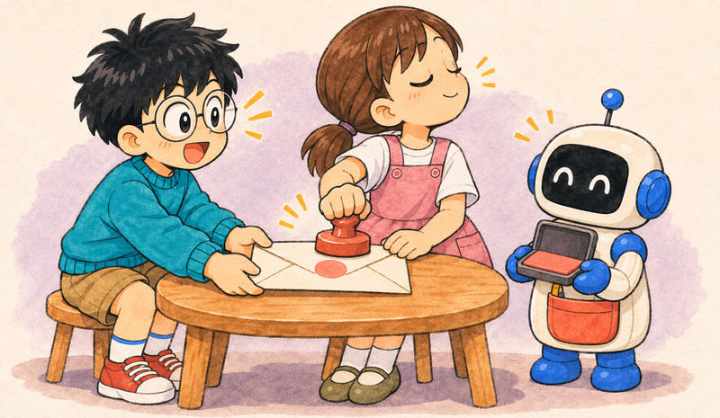
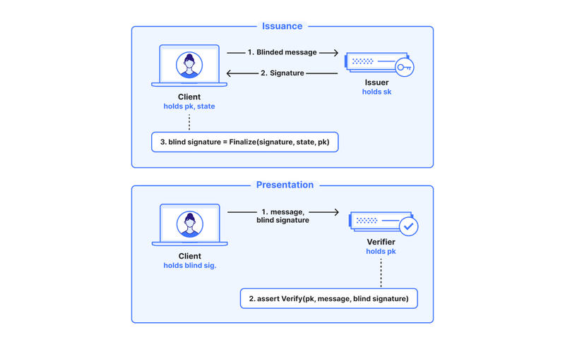
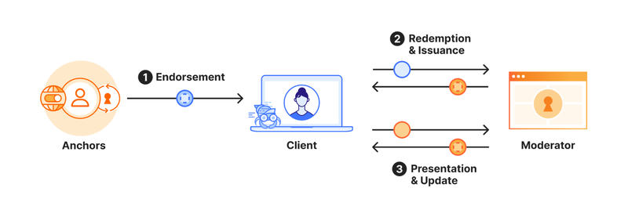

Feature 07 · ARTICLE · 2026 11
The post-quantum future of web privacy
Privacy Pass lets a site rate-limit clients with tokens that can’t be linked to the client they were issued to. It still relies on RSA and elliptic curves, so a quantum attacker will be able to forge tokens at will. But its privacy is unconditional: no attacker, quantum or not, can link a redemption to its issuance. That gives us a little breathing room, but we will need an alternative soon. We’re collaborating on the next generation, MOLE, and a recent blind signature, PoMFRIT, built from VOLE-in-the-Head and multivariate signatures, looks like a basis for all of it. The price is size: significantly larger than classical schemes. If the numbers hold, the transition shifts from cryptography design to protocol engineering. First we need security proofs, and cryptanalysis of UOV has to catch up.

What MOLE needs


A blind signature lets a client obtain a signature under an issuer’s key without revealing the message. Later the client reveals message and signature, and neither can be linked to the issuance. One type of Privacy Pass token is exactly that pair. To verify it, you need the issuer’s public key, so you learn who issued it.
Sometimes we want that signal; a token from one of our customers might prove a client may use that customer’s VPN. Often we only care that some trusted entity issued it. MOLE (“Moderation Of unLinkable Endorsements”) goes further: the token should hide the issuer, so we can’t treat tokens differently by who issued them. That guarantees equal treatment and makes it easier for more clients to participate.
An anchor issues an endorsement; a moderator redeems it. Client and moderator agree on an anchor set, and the client proves its endorsement came from one of those anchors without revealing which. The moderator then issues a credential. Credentials needn’t be anchor-hiding or even publicly verifiable, so blind signatures, anonymous credit tokens, or anonymous rate-limited credentials can all serve.
The parameter problem
Most post-quantum schemes in use are tuned for one job. ML-DSA’s parameters make a compact, secure signature; the same parameters would not necessarily be secure for other uses. We’re building many credential systems, not one, so we have come to view the central challenge as decoupling parameter selection from protocol design. Classical designers rarely think about their curve’s parameters. Efficient post-quantum credentials still require an enormous amount of expertise. Earlier this year, a breakthrough suggested that may have changed.
VOLE-in-the-Head
VOLEitH (Baum et al., Crypto 2023) is a zero-knowledge proof system: it proves knowledge of a hidden witness satisfying a public statement. Prove you know an AES key K with Y = AES(K, X), and you have a signature whose security reduces to AES. That is FAEST, a candidate in NIST’s signature competition.
It isn’t succinct: proofs grow linearly with the witness and the statement. But it is concretely efficient for equations over small binary fields. AES largely works in GF(2⁸), and FAEST proofs are about 4KB. KuMQuat proves a solution to the Multivariate Quadratic (MQ) problem, random quadratic equations over a small field, believed hard even for a quantum computer; its signatures can be as small as 2.6KB.
Multivariate signatures
In Unbalanced Oil and Vinegar (UOV), the public key is an MQ map P, and a signature is a vector s with P(s) = t, where t comes from hashing and salting the message. The secret trapdoor reveals a hidden split of the variables into “oil” and “vinegar”. Oil variables are never multiplied together, so fixing the vinegar leaves a linear system the signer can solve. The public key hides this structure.
UOV signatures are 135 bytes, among the smallest NIST candidates; its public keys, at 46.6KB, are the largest. MAYO has much smaller keys and slightly larger signatures. What matters here is that verifying either is about as costly as evaluating an MQ instance: a good fit for VOLEitH.
PoMFRIT
PoMFRIT (Baum et al., USENIX Security 2026), built on VOLEitH and MAYO, set a record for candidate post-quantum blind signatures: 6.7KB for the signature and a few hundred bytes for issuance. Swapping MAYO for UOV brings the signature to 4.3KB (UOV round 3 uov-Ip, FAEST-EM-128s), at the cost of larger public keys, which pays off when a key is cached and used often. This is competitive with state-of-the-art lattice constructions. The better news: its building blocks reconfigure easily into every credential system we’ve considered for MOLE, endorsements included.
It follows a well-known paradigm:
The client sends a commitment c = H(m, r), hiding message m behind randomness r.
The issuer returns s = Sign(sk, c), never seeing m.
The client proves knowledge of s and r such that Verify(pk, H(m, r)) = 1.
That proof, π, is the blind signature. The issuer sees a commitment; the verifier sees a proof. Even if they collude, or are the same entity, they cannot link the sessions.
The hash dominates the proof’s size. Keccak, the permutation in SHAKE and TurboSHAKE, suits VOLEitH: XOR becomes addition, AND becomes multiplication, rotations just rearrange values. PoMFRIT needs two permutations, proving roughly P(s) = H(H(m, r), rs), where rs is the issuer’s salt.
For an endorsement, the anchor keys are P₁, …, Pₙ, and the client proves Pᵢ(s) = H(H(m, r), rs) with i hidden. With some care, this costs about the same: two hashes and one MQ evaluation. Credit tokens and rate-limited credentials add a hash or two, plus range proofs that are cheap in VOLEitH. In every construction we’ve considered, Keccak is the main cost, so less hashing improves everything.
Optimizations, and their risks
Cryptanalysis of multivariate cryptography is still relatively immature. Recent years have seen advances against several parameter regimes. UOV and MAYO have weathered them, and an outright break seems more unlikely every year, but we should expect parameter changes that add cost. Deployed credential systems also often accept stronger-than-usual assumptions for forgery resistance, for performance.
PoMFRIT does exactly that. It splits the proof into two stages. The client commits to a random mask, hashes the message outside the circuit, and sends the masked target; the issuer finds a preimage with the trapdoor; the client then proves mask and preimage consistent. The issuer computes the hash directly, so the proof needn’t. This shrinks the proof but rests on a one-more-UOV assumption, which may be overly optimistic. Researchers at UC San Diego and INRIA recently forged a 1024-bit RSA signature using a Privacy Pass issuer as a signing oracle. Privacy Pass uses 2048-bit RSA, which with other defenses gives a pretty good margin; for UOV, we might use NIST Level 3 parameters instead of Level 1. A break here would let an attacker forge tokens, not violate a client’s privacy.
Is MOLE ready?
We’re developing VOLE-IHAT, a candidate for MOLE endorsements, and VOLE-ACT, a candidate for MOLE credentials. Estimates, subject to change; all public keys are 46.6KB:
| issuance | presentation | |
|---|---|---|
| PoMFRIT (with UOV) | <1KB | 4.3KB (redemption) |
| VOLE-IHAT | 5.6KB | 6.5KB (redemption) |
| VOLE-ACT | 5.4KB | 12.0KB (spend) |
These are significantly larger than classical counterparts, which surprises no one: PQ is big. Still, replacing RSA blind signatures with PoMFRIT costs about as much as replacing ECDSA with ML-DSA, and each operation takes a few milliseconds in our implementation.
If these numbers hold, the work shifts from cryptography design to protocol engineering. Classical blind signatures might be cheap enough to redeem on every request; we’ll have to amortize one redemption over many. Before that, we need security proofs showing our protocols are secure as long as UOV is, and cryptanalysis of UOV needs time to catch up. We encourage cryptographers to spend time with multivariate cryptography.